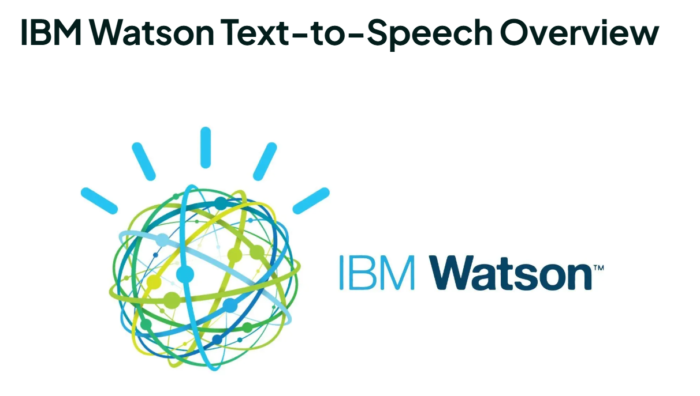

Trình Tạo Mã Nguồn🖥️👩💻
- Dựa trên việc học sâu và xử lý ngôn ngữ tự nhiên, hoặc NLP, các mô hình này hiểu bối cảnh và tạo ra mã phù hợp theo ngữ cảnh. Trình tạo mã có thể tạo đoạn mã mới hoặc chương trình từ dấu nhắc văn bản. Họ có thể dự đoán các dòng mã để hoàn thành đoạn mã một phần. Họ cũng có thể tạo ra các phiên bản tối ưu hóa của mã hiện có. Hơn nữa, các trình tạo mã này có thể chuyển đổi mã từ ngôn ngữ lập trình này sang ngôn ngữ lập trình khác.
- Họ cũng có thể tạo tóm tắt và nhận xét cho mã để cải thiện tài liệu. Trình tạo mã cũng có thể đề xuất một chương trình hoàn chỉnh giải pháp. Mô tả một vấn đề bạn đang cố gắng giải quyết và các trình tạo mã sẽ đề xuất các thuật toán, cấu trúc dữ liệu và các phương pháp lập trình đúng.
- Để tạo mã, điều quan trọng là bạn phải cung cấp một lời nhắc rõ ràng, chỉ định ngôn ngữ lập trình và cung cấp các yêu cầu và ràng buộc liên quan khác. Để chứng minh cách GPT giúp gỡ lỗi mã, hãy nhập mã không chính xác dưới dạng dấu nhắc văn bản trong TATGPT. Một mã và văn bản không chính xác được nhắc đến TATGPT. Chatgpt cung cấp mã chính xác và giải thích về Các sửa chữa được thực hiện. GPT cũng cho phép dịch mã từ ngôn ngữ lập trình này sang ngôn ngữ lập trình khác. Nó cũng có thể tạo ra tài liệu mã và ý kiến để cải thiện khả năng đọc. Các mô hình và công cụ dựa trên GPT đã phát triển để tạo mã dài hơn và chính xác hơn. Điều này cho phép sử dụng các mô hình và công cụ này để mã hóa để phát triển ứng dụng, trang web và plugin. Hơn nữa, sự phát triển của GPT cho phép tạo mã từ hình ảnh.
- Những công cụ này cũng giúp với đa nền tảng Khả năng tương thích và di chuyển bằng cách cho phép dịch mã đa ngôn ngữ. Các trình tạo mã dựa trên AI tuân theo các mẫu nhất quán và tiêu chuẩn mã hóa. Họ có thể đề xuất các mô hình tái cấu trúc để tuân thủ các thực tiễn tốt nhất. Tuy nhiên, các công cụ này nên được sử dụng một cách thận trọng để đảm bảo rằng mã do AI tạo ra không dẫn đến các vấn đề đạo đức.
Các trình tạo mã nổi bật như GitHub Copilot, Polycoder và IBM Watson Code Assistant cung cấp các tính năng khác nhau như khuyến nghị thời gian thực, tái cấu trúc mã và các mẫu giải pháp. Nói chung, bộ tạo mã cải thiện năng suất, tăng tốc phát triển Chu kỳ, thúc đẩy mã hóa các thực tiễn tốt nhất và thúc đẩy các tiêu chuẩn mã hóa nhất quán.
